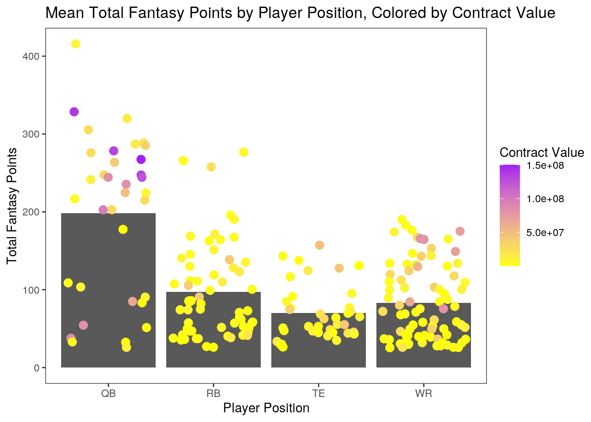

library(readxl)
library(tidyverse)## ── Attaching packages ─────────────────────────────────────────────────────── tidyverse 1.3.0 ──## ✓ ggplot2 3.3.2 ✓ purrr 0.3.4
## ✓ tibble 3.0.3 ✓ dplyr 1.0.1
## ✓ tidyr 1.1.1 ✓ stringr 1.4.0
## ✓ readr 1.3.1 ✓ forcats 0.5.0## ── Conflicts ────────────────────────────────────────────────────────── tidyverse_conflicts() ──
## x dplyr::filter() masks stats::filter()
## x dplyr::lag() masks stats::lag()#loading in two datasets
Fantasy_Football_19_Offensive_Player_Stats <- read_excel("2019 Fantasy Football Offensive Player Stats.xlsx", n_max = 300)
NFL_Salaries <- read_csv("football_salaries.csv")## Parsed with column specification:
## cols(
## position = col_character(),
## player = col_character(),
## team = col_character(),
## age = col_double(),
## total_value = col_double(),
## avg_year = col_double(),
## total_guaranteed = col_double(),
## fully_guaranteed = col_double(),
## free_agency = col_character()
## )library(dplyr)
#filter the second dataset to only include offensive player positions because fantasy football statistics are mainly taken from offensive players
NFL_Salaries <- NFL_Salaries %>% filter(position == "quarterback" | position == "running-back" | position == "wide-receiver" | position == "tight-end")
#join two datasets using full_join
joineddata <- full_join(Fantasy_Football_19_Offensive_Player_Stats, NFL_Salaries, by="player")
joineddata <- joineddata %>% na.omit()
joineddata <- joineddata %>% select(player, Pos, Gms, `Fantasy Points/Game`, `Total Fantasy Points`, total_value)
#rename total_value variable to `Contract Value` so that I can pivot longer using "_" later
joineddata <- joineddata %>% rename(`Contract Value` = total_value)library(knitr)
#used mutate to generate an additional variable that is a function of another variable
joineddata <- joineddata %>% mutate(`Projected Fantasy Points if Played All Games` = 16*`Fantasy Points/Game`)
#summary of all data, including tidying
joineddata %>% select(where(is.double)) %>% summarize_all(list(mean = mean, median = median, sd = sd, max = max, min = min), na.rm = T) %>% pivot_longer(contains("_")) %>% separate(name, sep = "_", into = c("variable", "stat")) %>% pivot_wider(names_from = "variable", values_from = "value") %>% arrange(stat)## # A tibble: 5 x 6
## stat Gms `Fantasy Points… `Total Fantasy … `Contract Value`
## <chr> <dbl> <dbl> <dbl> <dbl>
## 1 max 17 27.7 416. 150000000
## 2 mean 13.7 7.56 103. 16730950.
## 3 medi… 15 6.35 77.7 4612435
## 4 min 3 1.7 25.5 495000
## 5 sd 2.94 4.87 75.0 27185824.
## # … with 1 more variable: `Projected Fantasy Points if Played All Games` <dbl>#create a new categorical variable for splitting up contract classes
joineddata$contract_cat[joineddata$`Contract Value` < 8000000] <- "low"## Warning: Unknown or uninitialised column: `contract_cat`.joineddata$contract_cat[joineddata$`Contract Value` >= 8000000 & joineddata$`Contract Value` < 30000000] <- "medium"
joineddata$contract_cat[joineddata$`Contract Value` >= 30000000] <- "high"
#summary of data grouped by contract category classes low, medium, and high; includes tidying
joineddata %>% group_by(contract_cat) %>% select(where(is.double)) %>% summarize_all(list(mean = mean, median = median, sd = sd, max = max, min = min), na.rm = T) %>% pivot_longer(c(-1), values_to = "values", names_to = "stat") %>% separate(stat, sep = "_", into = c("variable", "stat")) %>% pivot_wider(names_from = "variable", values_from = "values") %>% arrange(match(contract_cat, c("low", "medium", "high")))## Adding missing grouping variables: `contract_cat`## # A tibble: 15 x 7
## contract_cat stat Gms `Fantasy Points… `Total Fantasy … `Contract Value`
## <chr> <chr> <dbl> <dbl> <dbl> <dbl>
## 1 low mean 13.6 6.05 80.4 3139968.
## 2 low medi… 15 5 61.9 2920860
## 3 low sd 2.93 3.69 53.2 1777055.
## 4 low max 16 18.7 277. 7697356
## 5 low min 3 1.7 25.5 495000
## 6 medium mean 14 9.32 134. 16905300.
## 7 medium medi… 15 7.8 115. 15555000
## 8 medium sd 2.86 5.94 94.9 6587027.
## 9 medium max 16 27.7 416. 29032436
## 10 medium min 3 2.4 26 8650000
## 11 high mean 13.6 10.8 148. 65368261.
## 12 high medi… 15 9.9 139. 50000000
## 13 high sd 3.15 4.95 82.3 35132793.
## 14 high max 17 20.5 329. 150000000
## 15 high min 4 3.2 36.5 30000000
## # … with 1 more variable: `Projected Fantasy Points if Played All Games` <dbl>library(tidyverse)
library(ggplot2)
#create correlation matrix
joineddata_num <- joineddata %>% column_to_rownames("player") %>%
select_if(is.numeric)
joineddatacorr <- cor(joineddata_num, use = "complete.obs")
joineddatacorr## Gms Fantasy Points/Game
## Gms 1.00000000 0.01052317
## Fantasy Points/Game 0.01052317 1.00000000
## Total Fantasy Points 0.31769371 0.94104499
## Contract Value 0.02236749 0.46098197
## Projected Fantasy Points if Played All Games 0.01052317 1.00000000
## Total Fantasy Points
## Gms 0.3176937
## Fantasy Points/Game 0.9410450
## Total Fantasy Points 1.0000000
## Contract Value 0.4411567
## Projected Fantasy Points if Played All Games 0.9410450
## Contract Value
## Gms 0.02236749
## Fantasy Points/Game 0.46098197
## Total Fantasy Points 0.44115667
## Contract Value 1.00000000
## Projected Fantasy Points if Played All Games 0.46098197
## Projected Fantasy Points if Played All Games
## Gms 0.01052317
## Fantasy Points/Game 1.00000000
## Total Fantasy Points 0.94104499
## Contract Value 0.46098197
## Projected Fantasy Points if Played All Games 1.00000000#tidy correlation matrix
tidycorpivot <- joineddatacorr %>% as.data.frame %>% rownames_to_column("Variable1") %>%
pivot_longer(-1, names_to = "Variable2", values_to = "Correlation")
tidycorpivot## # A tibble: 25 x 3
## Variable1 Variable2 Correlation
## <chr> <chr> <dbl>
## 1 Gms Gms 1
## 2 Gms Fantasy Points/Game 0.0105
## 3 Gms Total Fantasy Points 0.318
## 4 Gms Contract Value 0.0224
## 5 Gms Projected Fantasy Points if Played All Games 0.0105
## 6 Fantasy Points/Game Gms 0.0105
## 7 Fantasy Points/Game Fantasy Points/Game 1
## 8 Fantasy Points/Game Total Fantasy Points 0.941
## 9 Fantasy Points/Game Contract Value 0.461
## 10 Fantasy Points/Game Projected Fantasy Points if Played All Games 1
## # … with 15 more rowsProjected Fantasy Points if Played All Games using mutate. I did this by multiplying the Fantasy Points/Game variable by 16 to project how many total fantasy points players would end up with if they had played all 16 games and produced at their average fantasy points/game. After this, I found the mean, median, standard deviation, maximum, and minimum of all of the numeric variables using the sumarize_all function. I then tidied the datasets using pivot_longer and pivot_wider to demonstrate my use of these functions. There were many interesting summary statistics, including a player who played 17 games because of a trade after their bye week on their first team, but before the bye week on their second team. The Projected Fantasy Points if Played All Games corrected for this player, although they were not among the top fantasy producers. Another staggering statistic was the standard deviation for the contract value of 27185824; this is most likely due to differences between players with very large contracts contrasted with players with minimum contracts.#create correlation heat map
tidycorpivot %>% ggplot(aes(Variable1, Variable2, fill = Correlation)) + geom_tile() + scale_fill_gradient2(low = "white", mid = "yellow", high = "purple") + geom_text(aes(label = round(Correlation, 3)), color = "black", size = 2) + theme(axis.text.x = element_text(angle = 30, hjust = 1)) + coord_fixed() #create bar graph to display mean total fantasy points for each offensive position, related to contract value
ggplot(joineddata, aes(x=Pos, y=`Total Fantasy Points`)) + geom_bar(stat = "summary", fun=mean) + geom_jitter(aes(color = `Contract Value`), size = 3) + xlab("Player Position") + scale_color_gradient(low = "yellow", high = "purple") + ggtitle("Mean Total Fantasy Points by Player Position, Colored by Contract Value") + theme_test()
#cluster creation with goodness of fit
library(cluster)
cluster_data <- joineddata %>% select(Gms, `Fantasy Points/Game`, `Total Fantasy Points`, `Contract Value`, `Projected Fantasy Points if Played All Games`) %>% scale %>% as.data.frame
sil_width <- vector()
for (i in 2:10) {pam_fit <- pam(cluster_data, k = i)
sil_width[i] <- pam_fit$silinfo$avg.width}
ggplot() + geom_line(aes(x = 1:10, y = sil_width)) + scale_x_continuous(name = "k", breaks = 1:10)## Warning: Removed 1 row(s) containing missing values (geom_path).#cluster analysis table
mypam <- cluster_data %>% pam(4)
mypam## Medoids:
## ID Gms Fantasy Points/Game Total Fantasy Points Contract Value
## [1,] 13 0.7958855 1.8348484 2.1363008 0.8927097
## [2,] 65 0.4561399 0.1931469 0.3305763 -0.1740227
## [3,] 165 -1.5823336 -0.5250975 -0.7810078 -0.5153768
## [4,] 170 0.4561399 -0.9765654 -0.8196600 -0.4793289
## Projected Fantasy Points if Played All Games
## [1,] 1.8348484
## [2,] 0.1931469
## [3,] -0.5250975
## [4,] -0.9765654
## Clustering vector:
## [1] 1 1 1 1 1 1 1 1 1 1 1 1 1 1 1 1 1 1 1 1 1 1 1 1 1 1 2 2 2 2 2 2 1 2 2 2 2
## [38] 2 1 2 1 2 2 2 2 2 2 2 2 2 2 2 2 2 2 2 2 2 2 2 2 2 2 2 2 2 2 2 2 2 2 2 2 2
## [75] 2 2 2 2 2 2 2 2 3 2 2 2 2 2 2 2 2 2 2 2 3 2 4 4 4 4 3 2 3 2 4 4 2 4 4 4 2
## [112] 4 3 4 4 4 3 4 4 3 4 4 4 4 4 3 3 4 4 4 3 3 4 4 4 3 4 3 4 3 4 3 4 3 4 3 3 4
## [149] 3 3 3 4 4 4 3 3 4 4 4 4 4 4 4 4 3 4 4 4 4 4 4 4 4 4 4 4 3 3 4 4 4 3 3 4 4
## [186] 3 4 4 4 4 3 4 3 3 3 3 4 3 4 4 4 4 4 4 4 4 4 3 4 4 3 4 3 4 4 3
## Objective function:
## build swap
## 1.079184 1.034732
##
## Available components:
## [1] "medoids" "id.med" "clustering" "objective" "isolation"
## [6] "clusinfo" "silinfo" "diss" "call" "data"#average silhouette width
mypam$silinfo$avg.width## [1] 0.3845938#scatterplot showing cluster data
cluster_data <- cluster_data %>% mutate(cluster = as.factor(mypam$clustering))
ggplot(cluster_data, aes(x = `Contract Value`, y = `Fantasy Points/Game`, color = cluster)) + geom_point(size=2)#summarize cluster data
cluster_data %>% mutate(cluster = mypam$clustering) %>% group_by(cluster) %>% rename_all(function(x) str_replace(x, "_", "")) %>% summarize_if(is.numeric, .funs = list(mean = mean, median = median, sd = sd), na.rm = T)## # A tibble: 4 x 16
## cluster Gms_mean `Fantasy Points… `Total Fantasy … `Contract Value…
## <int> <dbl> <dbl> <dbl> <dbl>
## 1 1 0.444 1.94 2.01 1.36
## 2 2 0.289 0.299 0.355 -0.0928
## 3 3 -1.75 -0.228 -0.694 -0.109
## 4 4 0.448 -0.859 -0.704 -0.366
## # … with 11 more variables: `Projected Fantasy Points if Played All
## # Games_mean` <dbl>, Gms_median <dbl>, `Fantasy Points/Game_median` <dbl>,
## # `Total Fantasy Points_median` <dbl>, `Contract Value_median` <dbl>,
## # `Projected Fantasy Points if Played All Games_median` <dbl>, Gms_sd <dbl>,
## # `Fantasy Points/Game_sd` <dbl>, `Total Fantasy Points_sd` <dbl>, `Contract
## # Value_sd` <dbl>, `Projected Fantasy Points if Played All Games_sd` <dbl>#Visualization of all pairwise combinations
library(GGally)## Registered S3 method overwritten by 'GGally':
## method from
## +.gg ggplot2ggpairs(cluster_data, aes(color = cluster))## `stat_bin()` using `bins = 30`. Pick better value with `binwidth`.## `stat_bin()` using `bins = 30`. Pick better value with `binwidth`.
## `stat_bin()` using `bins = 30`. Pick better value with `binwidth`.
## `stat_bin()` using `bins = 30`. Pick better value with `binwidth`.
## `stat_bin()` using `bins = 30`. Pick better value with `binwidth`.Fantasy Points/Game, Total Fantasy Points, Contract Value, Projected Fantasy Points if Played All Games. I then found the ideal number of clusters for maximizing my silhoutte width using the PAM clustering silhoutte method. The goodness of fit plot showed that the ideal number was 4, so I moved forward and produced a cluster analysis table. The average silhouette width of pam1 was calculated as approximately 0.385, which indicates that a weak structure was found and could be artificial, however because the goodness of fit plot showed that the ideal number was 4, I moved on. I then produced a scatterplot of the cluster data measuring Fantasy Points/Game against Contract Value. This showed the four clusters, with the red cluster being the most spread out but least voluminous. It also showed the purple cluster being clumped together in the bottom left corner, with the least variation among the four clusters. Afterwards, I printed the summary statistics (mean, median, and standard deviation) of the clusters. Cluster 1 had universally positive summary statistics, while cluster 3 had the most negative summary statistics. Finally, I created a visualization of all the numeric variable pairwise combinations. This showed correlations consistent with my correlation heat maps, and provided interesting plots.